Объекты и иерархия
- создавать объекты и папки и вкладывать их друг в друга;
- переносить теги и объекты мышью, не теряя привязку к хранилищу и записанные значения;
- понимать, как положение узла в иерархии отражается в именах привязок в хранилище.
К концу урока параметры станции разложены по иерархии: объект «Цех», в нём папка «Насосы», в ней объект «Насос» с тремя тегами из прошлого урока. Теги переехали вместе со своими значениями.
Список тегов удобен, пока параметров мало. Когда у станции появятся бак, второй насос, помещение с камерой, плоский список превратится в длинную ленту имён. Объекты группируют параметры так, как устроен сам объект: у каждого агрегата — свои теги. А папки помогают разложить однотипные объекты по группам.
Что собираем

Строить будем в два приёма. Сначала сделаем объекты «Цех» и «Насос» и перенесём в «Насос» теги. Затем добавим в «Цех» папку «Насосы» и переместим в неё «Насос». На каждом из приёмов посмотрим, что происходит с хранилищем.
Объект «Цех»
В дереве нажмите кнопку «…» справа от корня «Объекты» и выберите Новый объект.
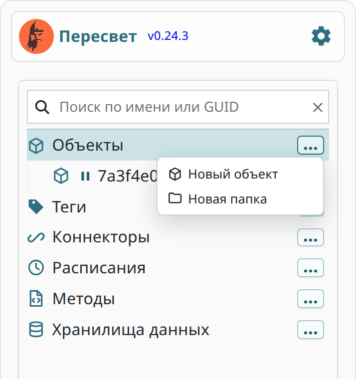
Объект создаётся сразу, а его имя — это идентификатор (GUID). Справа открываются свойства объекта.
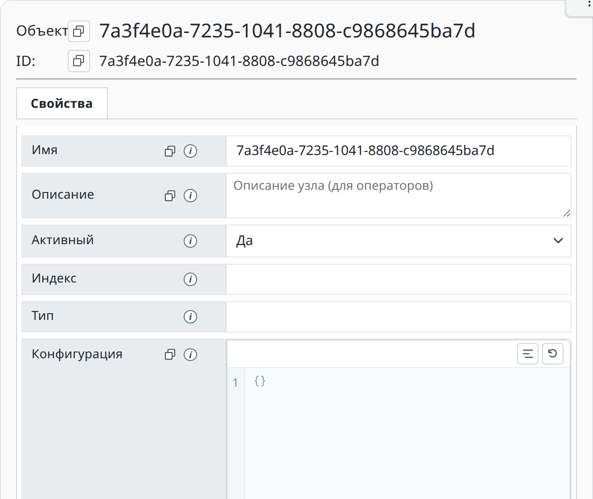
Замените имя на Цех и нажмите кнопку-галочку «Записать» под формой.
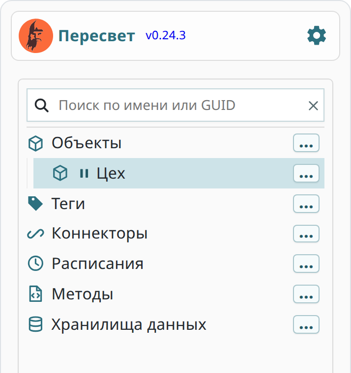
Объект «Насос»
Нажмите «…» справа от объекта «Цех». В меню у объекта больше пунктов, чем у корня: можно создать вложенный объект, тег или папку. Выберите Новый объект.
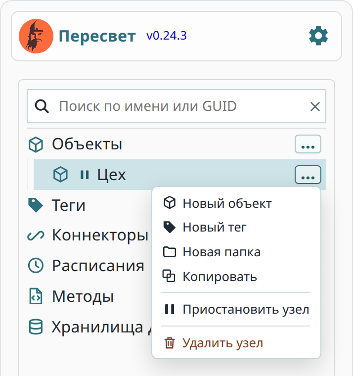
Задайте имя Насос и нажмите «Записать». Объект «Насос» лежит внутри «Цеха»: глубина вложенности не ограничена, позже у станции появятся бак и помещение с камерой.
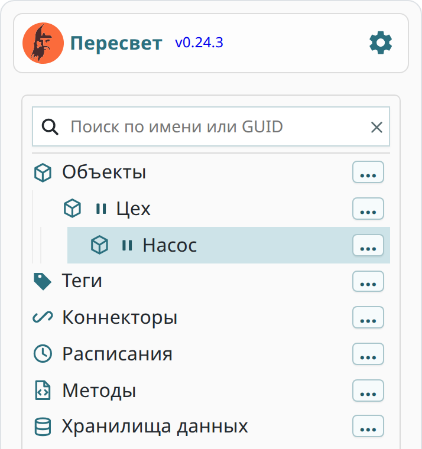
Перенос тегов в объект
Раскройте корень «Теги». Нажмите на «Давление», затем с нажатым Ctrl нажмите на «Ток» и «Уровень»: выделены все три тега.
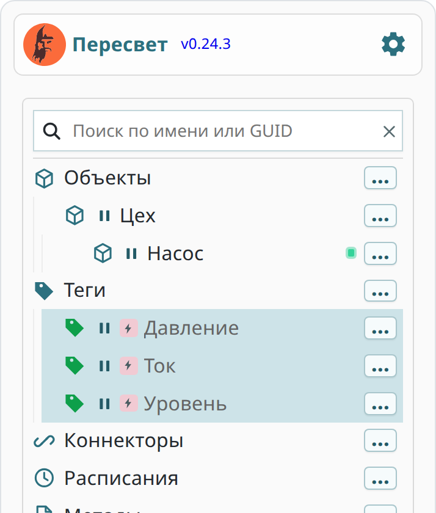
Перетащите выделенные теги мышью на объект «Насос». Пока кнопка мыши нажата, объект-приёмник обведён рамкой, а переносимые теги бледнеют.
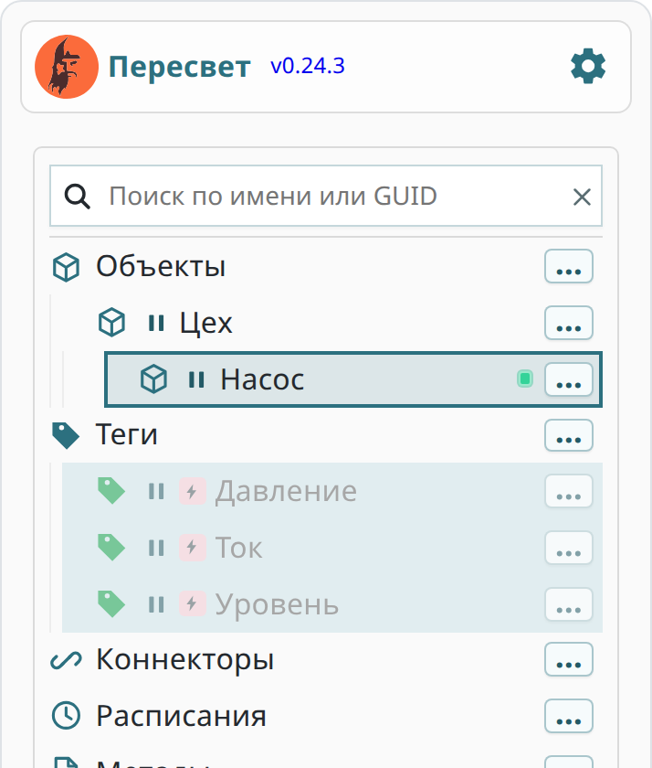
Отпустите кнопку. Теги оказались внутри «Насоса», корень «Теги» пуст.
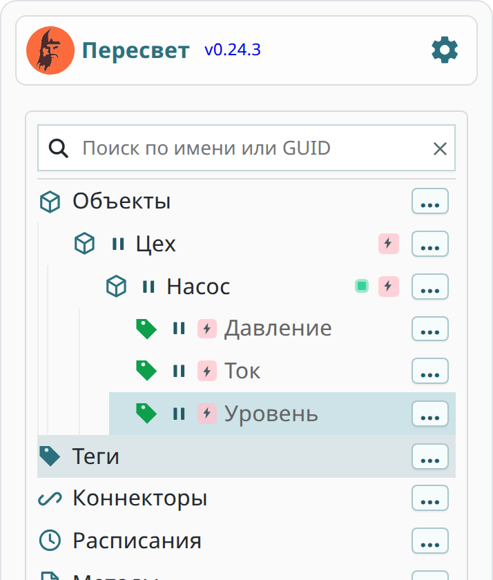
Тег при переносе остаётся тем же тегом: меняется только его место в дереве. Привязка к хранилищу и записанные значения сохраняются.
Что изменилось в хранилище
Откройте «Хранилища данных» и нажмите на psql. Сравните имена привязок с уроком 2: тогда они назывались просто «Давление», «Ток», «Уровень».
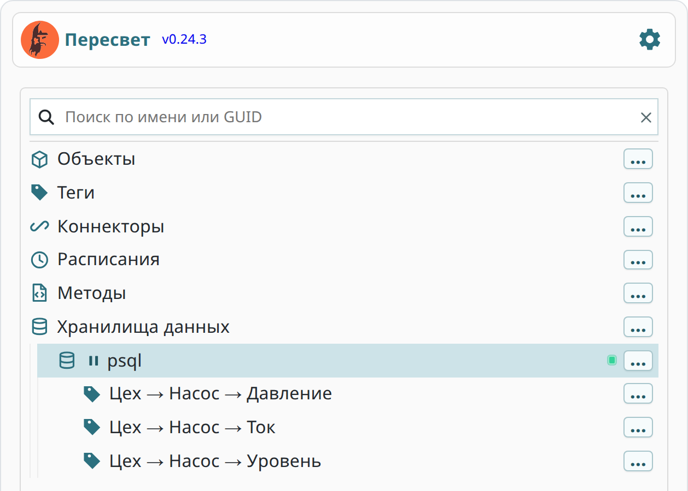
Теперь имя привязки — это путь к тегу в иерархии: «Цех → Насос → Давление». Так в хранилище видно, к какому узлу модели относится каждая таблица, даже когда тегов сотни. Сама таблица и записанные значения остались прежними: изменилось только имя, под которым привязка показана в дереве.
Папка «Насосы»
Когда насосов станет несколько, их удобно держать вместе. Для этого есть папки. Нажмите «…» справа от «Цеха» и выберите Новая папка.
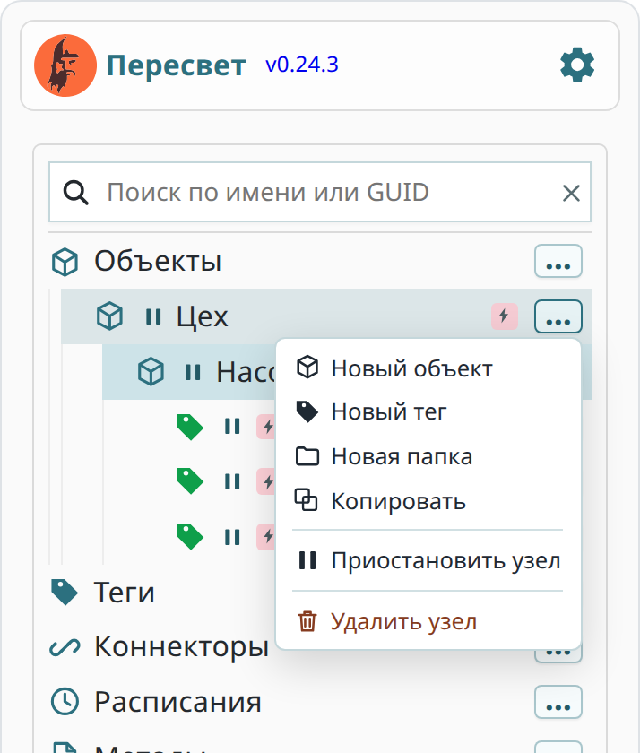
Папка появляется сразу, с именем «Новая папка». Нажмите на неё — справа откроются свойства.
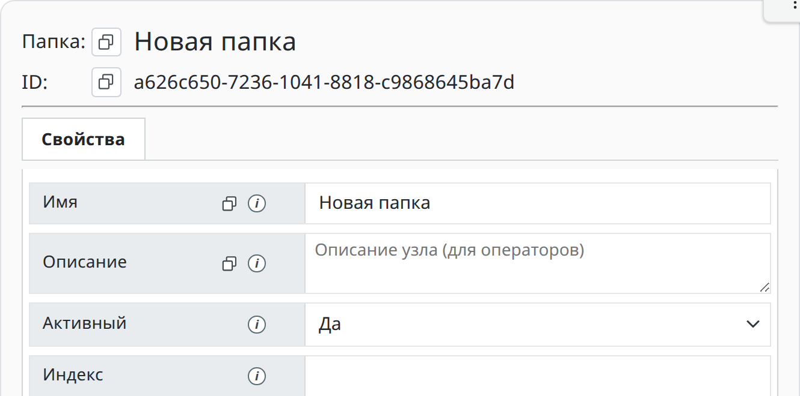
Замените имя на Насосы и нажмите «Записать». Папка группирует узлы. Сама она ничего не измеряет и не хранит.
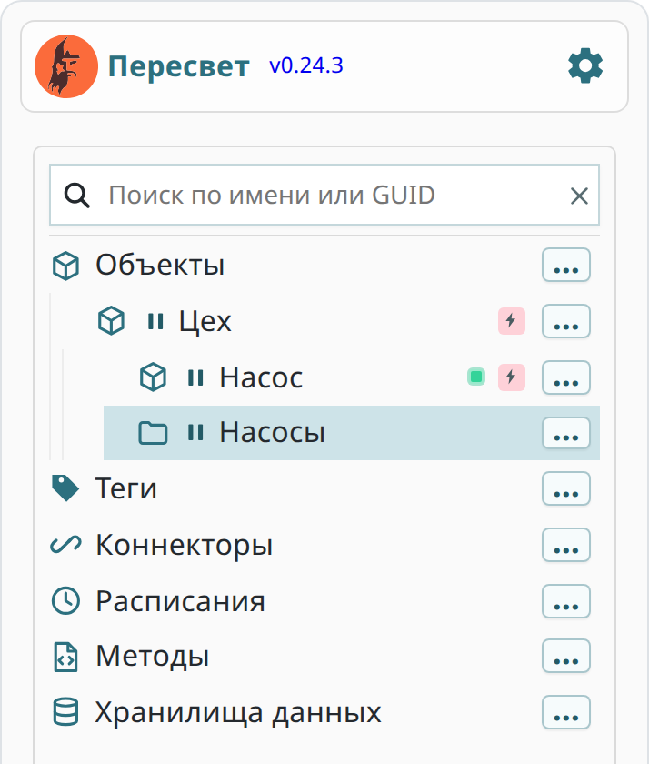
Перенос объекта в папку
Перетащите объект «Насос» мышью на папку «Насосы». Теги переедут вместе с ним.
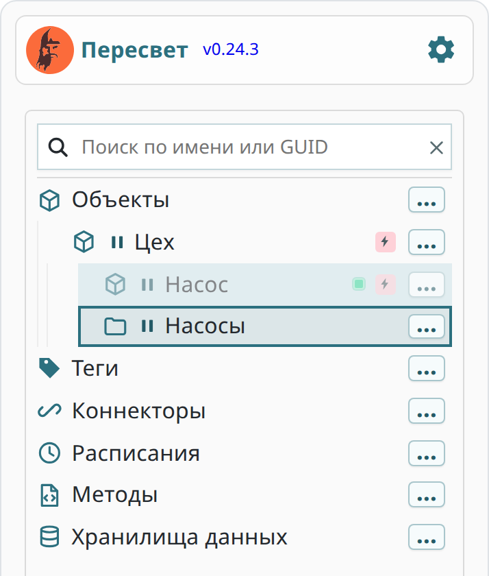
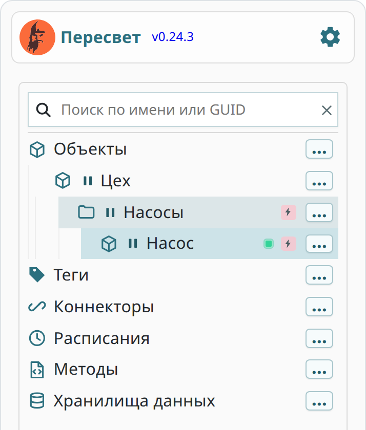
Вернитесь в хранилище psql. В пути каждой привязки появилась папка.
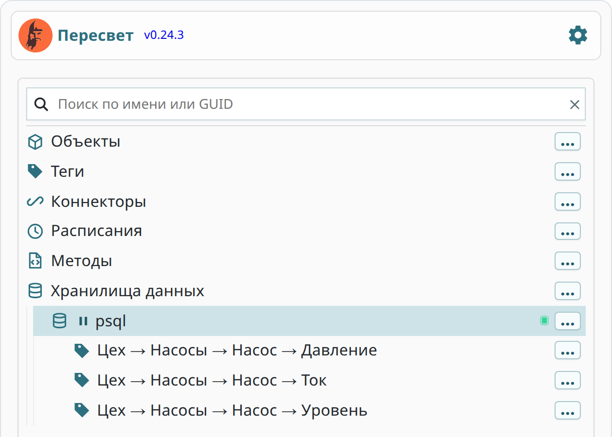
Теги не трогали, мы переместили только объект выше по дереву, но имена всех его привязок изменились: «Цех → Насосы → Насос → Давление». Имя привязки всегда отражает актуальный путь.
Данные при этом на месте. Откройте тег «Давление» (теперь он по пути «Цех → Насосы → Насос»), перейдите на вкладку «Хранилище» и нажмите «Получить данные» на вкладке «Запрос на чтение»: возвращается последнее записанное значение — 4.6.
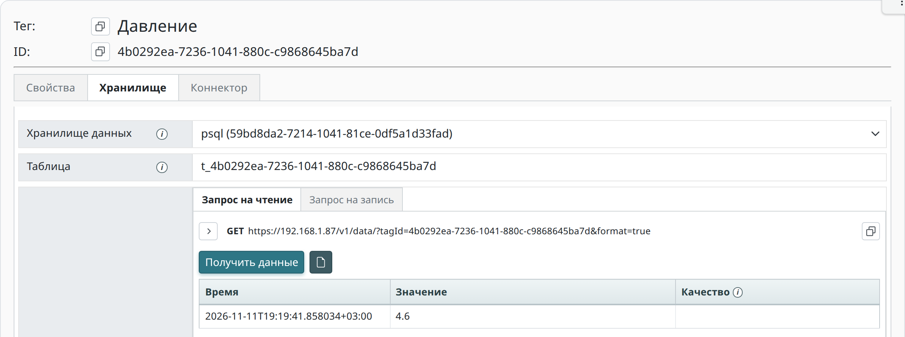
Проверка
- Дерево совпадает с рисунком: «Цех» → «Насосы» → «Насос» → три тега.
- Корень «Теги» пуст.
- В хранилище
psqlтри привязки с именами вида «Цех → Насосы → Насос → Давление». - Чтение давления по-прежнему возвращает последнее записанное значение — 4,6.
Дальше на этих тегах строится расчёт: метод вычислит мощность двигателя по току.